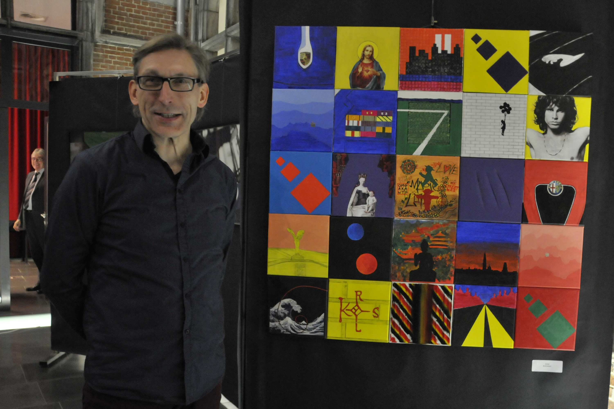

"Stad aan de Stroom", acryl op doek, 70x30cm, dec.2007
Johan Andriessen

op de Campuscrack-tentoonstellingen van november 2013 en maart 2018
mijn vormentaal:
net als iedere kunstenaar streef ook ik naar een eigen vormentaal. in de loop van de jaren is die stap voor stap ontstaan en nog steeds in ontwikkeling.
het is een proces dat eigenlijk nooit stopt. iedere stap opent weer andere inzichten en nieuwe 'vormen'.
evolutie:
"unreachable", mixed media, 170x180cm, feb.2010
ik ben in okt.2007 begonnen met schilderen met acryl op doek. tegen feb.2010 heb ik van de gemaakte schilderijen een eerste 'collage' gemaakt, die ik 'unreachable' noemde. het werd een verzameling van 19 werken (1 drieluik, en 2 tweeluiken, dus bestaande uit 23 doeken. en ook nog 4 doekjes van 10x10cm met de letters CMYK). dit alles werd gemonteerd op hardboard op houten latten, en aan mijn muur gehangen (170x180cm!).
"power", mixed media, 180x130cm, jan.2012
na die eerste 'collage' bleef ik verder kunstwerken maken in acryl op doek. in september 2011 begon ik aan het eerste jaar textiele kunst aan de academie van Antwerpen (KASKA), waardoor de focus verschoof naar de opdrachten daar.
in januari 2012 maakte ik echter nog van de thuis ontstane werken een tweede 'collage' getiteld 'power'. deze bestond uit 7 werken (3 tweeluiken, dus 10 doeken. aangevuld met 4 doeken van 20x20cm). dit alles werd gemonteerd op mdf-plaat op houten latten en ook in mijn living aan de muur gehangen ! :-)
met deze 'collage' heb ik dan deelgenomen aan de preselecties van de Canvascollectie (28 jan.2012), zonder echter geselecteerd te zijn.
mijn living zoals ze er uitzag van jan. 2012 tot nov.2013
iets te druk misschien :-)
"power2", mixed media, 100x100cm, nov.2013
doordat het formaat van 20x20cm in het vorige werk zo in de smaak viel en ook door de positieve commentaar van de jury, begon ik direct van feb. tot apr. 2012 aan een nieuwe 'collage', eerst bestaande uit 16 doeken van 20x20cm.
als inspiratie nam ik de onderwerpen en beelden van de twee vorige 'collages'. in voorbereiding voor de Campuscrack kunstwedstrijd heb ik deze dan van aug. tot okt. 2013 uitgebreid naar 25 werken, ook nu weer met de vorige twee 'collages' als inspiratiebron. zodoende ontstond een nieuwe 'collage' van doeken van 1 x 1 m, getiteld 'power 2'.
op 21 nov.2013 mocht ik met dit werk 'power2' de tweede prijs in ontvangst nemen op de opening
van de Campuscrack tentoonstelling op de Universiteit Antwerpen.
na de campuscrack-tentoonstelling (29 nov. 2013) werd het werk 'power' weggenomen om plaats maken voor het nieuwe. later (op 25 juni 2016) is het trouwens nog tijdens de opendeurdag van de academie Wilrijk tijdens een performance ('no more rain!') volledig overschilderd (eerst in het grijs en daarna live) in het blauw (2de jaar Kunstlab).
"7x7" , mixed media, 71x71cm, maart 2014
ook hier weer door de positieve feedback van de jury, en kennismaking met het begrip 'appropriation art', begon ik al in jan.2014 aan een volgende 'collage', deze keer met 7x7 werkjes van 10x10cm. ook nu wou ik dezelfde vormentaal hanteren als bij de vorige werken, gecombineerd met verwijzingen naar enkele werken van bekende kunstenaars. het is interessant om te zien hoe ik eenzelfde 'vorm' of beeld met de jaren steeds kleiner heb weergegeven, en daarmee ook 'fijner'.
verklaring "7x7":
"unreachable2", mixed media, 50x50cm, jul.2014
in maart 2014 heb ik dan, ook nu weer om plaats te maken voor het nieuwe werk, de grote 'collage' "unreachable" afgebroken, om er in juli een nieuwe kleinere 'collage' van te maken ('unreachable2', 50x50cm, bestaande uit 25 uitsnedes van 9x9cm van de grote 'collage').
"Stad aan de Stroom", acryl op doek, 70x30cm, dec.2007
Eén van de oorspronkelijke werken van de grote 'collage' "unreachable" heb ik volledig gerecupereerd, namelijk het werk "Stad aan de Stroom".

uit het werk "7x7" vloeiden nog twee nieuwe werken voort: 'horizon': 24 varianten op de asfaltweg met twee gele lijnen, die naar één punt op de horizon lopen (papier op mdf, 3 delen van 80x10cm, apr. 2014), en 'album top 500': een verzameling van 8x8=64 platenhoezen (papier en karton op mdf, 80,5x80,5cm, jul. 2014).

"belgische abstracten" , mixed media, 60x60cm, nov. 2015
in sept. 2014 begon ik, na 3 jaar textiele kunst op de KASKA (van sept. 2011), aan het eerste jaar monumentale kunst (Kunstlab) aan de academie van Wilrijk. de creatieve focus bleef dus liggen bij de opdrachten in de academie.
voor de Campuscrack wedstrijd van 12 nov.2015 maakte ik een nieuw werk, ook weer in de vorm van een 'collage', deze keer gemaakt met werken van de 'Belgische abstracten'.
het werk bestaat uit 6x6=36 bestaande werken van 9 Belgische (geometrisch) abstracte kunstenaars, uit de periode voor en na de tweede wereldoorlog. in het oorspronkelijke werk was ook Marthe Wéry opgenomen in de plaats van Victor Servranckx. in dec. 2019 heb ik dit echter aangepast omdat Marthe Wéry eigenlijk niet past in deze groep kunstenaars. (ik heb mij misschien vergist met Marthe Donas die wel, zoals Servranckx, tot de eerste groep belgische geometrisch abstracte kunstenaars behoorde.)

"zonder titel" , mixed media, 1x1m, jan. 2018
in sept. 2017 na 3 jaar monumentale kunst (Kunstlab), begon ik aan een andere richting in de academie van Wilrijk, namelijk Zeefdruk.
voor de campuscrack 2018 maakte ik een volgend kunstwerk, met als werktitel '7-10-14-20'. het bestaat uit 5x5=25 vierkanten van 20cm in papier op mdf.
tijdens de opening van de Campuscrack-tentoonstelling op 1 maart 2018 behaalde ik met dit werk een eervolle vermelding.
maart 2018
reeks 1: collage#10 ... 13:
"collage#10" en "collage#11", mixed media, 40x40cm, sept. 2020
(reeks 1, deel 1 en 2, verdeling 1)
"collage#12" en "collage#13", mixed media, 40x40cm, sept. 2020
(reeks 1, deel 1 en 2, verdeling 2)
als antwoord op de vraag om een aantal meer commerciele en dus meer verkoopbare werken te maken, begon ik in juli 2020 aan een vervolg op het werk "7x7". ik heb gekozen voor een formaat van 40x40cm, wat overeen komt met 4x4=16 doekjes van 10x10cm.
ik ben begonnen met een eerste reeks van 32 verschillende afbeeldingen, allemaal hernemingen van vakjes uit "7x7".
elke afbeelding heb ik ineens telkens twee maal gemaakt. hierdoor ontstonden dus de collages #10 en #11 (2 keer 16 geeft 32 afbeeldingen), alsook de collages #12 en #13 (ook 2 keer 16 afbeeldingen, maar nu volgens een andere verdeling:).
collage#12 bevat enkel afbeeldingen van mensen en dieren, en collage#13 de rest van de 32 afbeeldingen.
reeks 2: collage#14 ... 17:
"collage#14" en "collage#15", mixed media, 40x40cm, apr. 2021
(reeks 2, deel 1 en 2, verdeling 1)
"collage#16" en "collage#17", mixed media, 40x40cm, apr. 2021
(reeks 2, deel 1 en 2, verdeling 2)
na de eerste reeks begon ik in september 2020 aan reeks 2. dit was echter wat moeilijker aangezien reeds een groot deel van de afbeeldingen uit "7x7" gebruikt waren in de eerste reeks. ik moest dus op zoek naar nieuwe afbeeldingen, nieuwe vormen.
ook nu weer wou ik 2x16 is 32 verschillende afbeeldingen maken, met van elke afbeelding telkens 2 stuks, om zo weer tot 4 collages van telkens 16 afbeeldingen te komen.
naast nog enkele hernemingen van vakjes uit het werk "7x7", waren bekende werken uit de kunstgeschiedenis, een paar door mij aangekochte kunstwerken, alsook enkele van mijn eigen (vooral zeefdruk-) werken, de inspiratiebron.
vierluik (quadriptych):
"quadriptych", acryl op doek, 40x40cm, juni. 2021
aangezien het gebruik van afbeeldingen van bestaande kunstwerken in het commerciele circuit blijkbaar moeilijk ligt, heb ik dit werk gemaakt.
het is eigenlijk een copie van de rechter beneden hoek van mijn vroegere werk 'power 2'.
dit is mijn eerste werk dat verkocht is (via de on-line veiling site CataWiki).